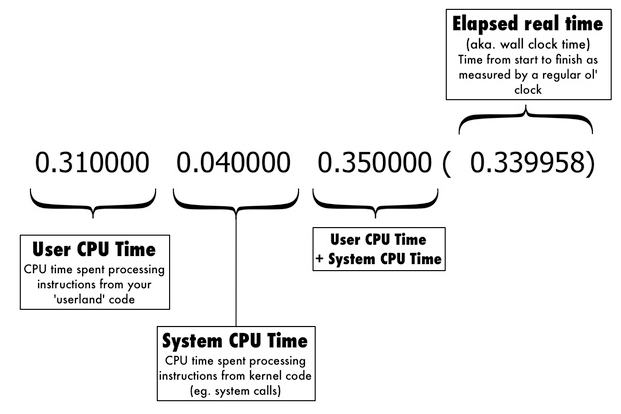

Uso de ferramentas no processo de desenvolvimento, seja de sistemas legados ou novos pode garantir não só melhores resultados, como poupar o desenvolvedor de muito sofrimento.
Ferramentas podem ser usadas para:
Metric Fu
Refatorando o domínio de mídias
conjunto de ferramentas com foco em extrair métricas do código, tais como, complexidade, duplicidade ou similaridades, code smell, qualidade geral do código, cobertura de testes, etc...
Com tantas métricas, é preciso foco para não se perder.
Na refatoração de mídias, a métrica escolhida foi a de similaridades de código.
Mesmo focando em uma só metrica, a melhoria acaba se refletindo em outras.
Brakeman
Preocupação com segurança desde o início
É um scanner de vulnerabilidades para aplicações rails. Ele analisa estaticamente o código em busca de várias vulnerabilidades conhecidas.
É atualizado com frequência, então é importante mantê-lo nas versão mais recente possível.
Em nossos pipelines foi adicionado no primeiro passo como um elementro blocante.
Falhas de segurança apontadas param o pipeline.
Detectar vulnerabilidades antes evita eventuais bugs em produção, melhora a qualidade do código e libera tempo para o time focar em melhorias técnicas ou novas funcionalidades
I18n Tasks
Gerenciando sem sofrimento internacionalização
Conjunto de comandos para gerenciar traduções e localização de aplicações Rails. Ajuda a detectar internacionalização não usada ou sem tradução.
Instrumentando o código
Coletando métricas para ajudar na resolução de problemas.
Definir uma estratégia e uma marcação padronizada. Em nosso caso:
Ruby Benchmark
modulo do Ruby que implementa diversas maneiras de medir seu código(benchmarking)
bm = Benchmark.measure { BigMath.PI(10_000) }
puts bm
==> 0.310000 0.040000 0.350000 ( 0.339958)

Padronizar tags no log, com o intuito de facilitar no processamento.
measure.[module].[measure]
MONGODB (0.9ms) media_domain_development['imagens'].find({:marca=>"Alexandria", :status=>"disponivel", :$text=>{"$search"=>"dilma"}}).limit(15).sort([["updated_at", -1]])
[DEBUG] [c8dfaeae-17dd-4cb7-8430-cbc844cee308] [127.0.0.1] measure.search.total_time: 56.956 ms
Identificar possíveis pontos de problema e criar uma estratégia de monitoramento.
[INFO] [667d7819-5b5b-461f-96d9-7ce771a64c3c] [127.0.0.1] Started GET "/data_entry/imagens/557b3e4f84cb9a2732000045/edit" for 127.0.0.1 at 2015-07-12 21:23:32 -0300
[INFO] [667d7819-5b5b-461f-96d9-7ce771a64c3c] [127.0.0.1] Processing by ImagensController#edit as HTML
[INFO] [667d7819-5b5b-461f-96d9-7ce771a64c3c] [127.0.0.1] Parameters: {"id"=>"557b3e4f84cb9a2732000045"}
[INFO] [667d7819-5b5b-461f-96d9-7ce771a64c3c] [127.0.0.1] measure.transf.Alexandria.total_time: 12093.063 ms
[INFO] [667d7819-5b5b-461f-96d9-7ce771a64c3c] [127.0.0.1] measure.transf.Sistema.total_time: 1585.423 ms
[INFO] [667d7819-5b5b-461f-96d9-7ce771a64c3c] [127.0.0.1] measure.transf.Alexandria.total_time: 11473.901 ms
[DEBUG] [667d7819-5b5b-461f-96d9-7ce771a64c3c] [127.0.0.1] MONGODB (1.8ms) media_domain_development['imagens'].find({:_id=>BSON::ObjectId('557b3e4f84cb9a2732000045')}).limit(-1)
[INFO] [667d7819-5b5b-461f-96d9-7ce771a64c3c] [127.0.0.1] Rendered shared/_editorias.html.erb (9.6ms)
[INFO] [667d7819-5b5b-461f-96d9-7ce771a64c3c] [127.0.0.1] Rendered shared/_rotulos_controlados.html.erb (1.2ms)
[INFO] [667d7819-5b5b-461f-96d9-7ce771a64c3c] [127.0.0.1] Rendered shared/_form_extras_impresso.html.erb (4.3ms)
[DEBUG] [667d7819-5b5b-461f-96d9-7ce771a64c3c] [127.0.0.1] MONGODB (0.8ms) media_domain_development['sessions'].find({:_id=>"9bGL8oWWPMIuzEOOg0NxkYO-rLw"}).limit(-1)
[INFO] [667d7819-5b5b-461f-96d9-7ce771a64c3c] [127.0.0.1] Rendered imagens/_form.html.erb (137.1ms)
[INFO] [667d7819-5b5b-461f-96d9-7ce771a64c3c] [127.0.0.1] Rendered imagens/edit.html.erb within layouts/application (174.8ms)
[INFO] [667d7819-5b5b-461f-96d9-7ce771a64c3c] [127.0.0.1] Caching Console's output. Doing it on a separate process...
[INFO] [667d7819-5b5b-461f-96d9-7ce771a64c3c] [127.0.0.1] Caching Console's output. Doing it on a separate process...
[INFO] [667d7819-5b5b-461f-96d9-7ce771a64c3c] [127.0.0.1] Rendered shared/_flash_message.html.erb (0.9ms)
[INFO] [667d7819-5b5b-461f-96d9-7ce771a64c3c] [127.0.0.1] measure.transf.Alexandria.total_time: 12317.929 ms
[INFO] [667d7819-5b5b-461f-96d9-7ce771a64c3c] [127.0.0.1] Completed 200 OK in 38068ms (Views: 298.9ms)
[INFO] [7012af9e-1477-462f-99b0-a04f226838eb] [127.0.0.1] Started GET "/data_entry/imagens/557b3e4f84cb9a2732000045/edit" for 127.0.0.1 at 2015-07-12 21:37:12 -0300
[INFO] [7012af9e-1477-462f-99b0-a04f226838eb] [127.0.0.1] Processing by ImagensController#edit as HTML
[INFO] [7012af9e-1477-462f-99b0-a04f226838eb] [127.0.0.1] Parameters: {"id"=>"557b3e4f84cb9a2732000045"}
[INFO] [7012af9e-1477-462f-99b0-a04f226838eb] [127.0.0.1] measure.transf.Alexandria.total_time: 14.262 ms
[INFO] [7012af9e-1477-462f-99b0-a04f226838eb] [127.0.0.1] measure.transf.Sistema.total_time: 2.129 ms
[INFO] [7012af9e-1477-462f-99b0-a04f226838eb] [127.0.0.1] measure.transf.Alexandria.total_time: 0.091 ms
[DEBUG] [7012af9e-1477-462f-99b0-a04f226838eb] [127.0.0.1] MONGODB (1.5ms) media_domain_development['imagens'].find({:_id=>BSON::ObjectId('557b3e4f84cb9a2732000045')}).limit(-1)
[INFO] [7012af9e-1477-462f-99b0-a04f226838eb] [127.0.0.1] Rendered shared/_editorias.html.erb (11.7ms)
[INFO] [7012af9e-1477-462f-99b0-a04f226838eb] [127.0.0.1] Rendered shared/_rotulos_controlados.html.erb (1.2ms)
[INFO] [7012af9e-1477-462f-99b0-a04f226838eb] [127.0.0.1] Rendered shared/_form_extras_impresso.html.erb (10.0ms)
[DEBUG] [7012af9e-1477-462f-99b0-a04f226838eb] [127.0.0.1] MONGODB (0.7ms) media_domain_development['sessions'].find({:_id=>"9bGL8oWWPMIuzEOOg0NxkYO-rLw"}).limit(-1)
[INFO] [7012af9e-1477-462f-99b0-a04f226838eb] [127.0.0.1] Rendered imagens/_form.html.erb (216.7ms)
[INFO] [7012af9e-1477-462f-99b0-a04f226838eb] [127.0.0.1] Rendered imagens/edit.html.erb within layouts/application (296.2ms)
[INFO] [7012af9e-1477-462f-99b0-a04f226838eb] [127.0.0.1] Caching Console's output. Doing it on a separate process...
[INFO] [7012af9e-1477-462f-99b0-a04f226838eb] [127.0.0.1] Caching Console's output. Doing it on a separate process...
[INFO] [7012af9e-1477-462f-99b0-a04f226838eb] [127.0.0.1] Rendered shared/_flash_message.html.erb (0.8ms)
[INFO] [7012af9e-1477-462f-99b0-a04f226838eb] [127.0.0.1] measure.transf.Alexandria.total_time: 0.061 ms
[INFO] [7012af9e-1477-462f-99b0-a04f226838eb] [127.0.0.1] Completed 200 OK in 852ms (Views: 484.3ms)
O uso de ferramentas para apioar o desenvolvimento, não só facilita a vida do desenvolvedor
Use a barra de espaços para passar para o próximo slide.